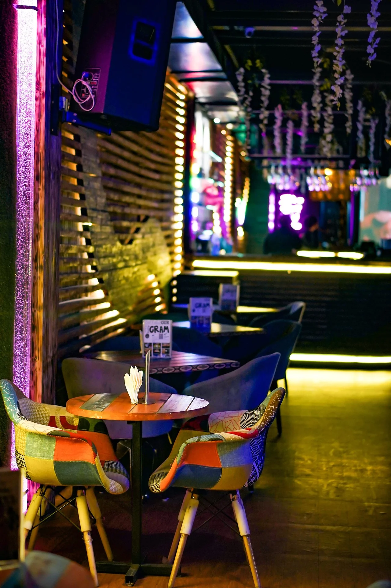

About Loco
Step into Loco Cafe, a vibrant hub where lively chatter meets the aroma of freshly brewed coffee and tempting treats. Our space buzzes with an energetic yet welcoming atmosphere, perfect for sparking conversations and fueling your day.
Nestled in the heart of Moorabbin, Loco Cafe offers a convenient and cheerful spot within the local community. Whether you're a resident, a student from nearby campuses, or just passing through, find us easily for a delightful break every day of the week from 6 AM to 16 PM
Quench your thirst with our diverse selection of expertly crafted coffees, refreshing cold beverages, and satisfy those cravings with our delicious range of cakes and other tasty munchies.
